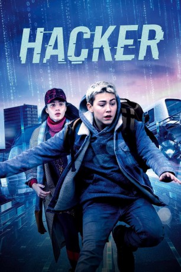

#12082 Hacker - Die Zeus-Verschwörung
 
 IMDB-Wertung: 5.4 / 10
IMDB-Wertung: 5.4 / 10  Metascore: 0
Metascore: 0 
Spannender Jugend-Thriller um einen 13-jährigen Hacker: Benjamins Mutter programmierte einst einen geheimen und hochbrisanten Algorithmus, mit dem man Wähler beeinflussen kann. Dann verschwand sie spurlos. Jahre später spürt Benjamin sie im Untergrund auf und stößt dabei auf eine breitangelegte politische Verschwörung. Nichts ist, wie es scheint und er kann niemandem vertrauen…
Jahr: 2019
Dauer: 97 Minuten
FSK: 12
Land: Dänemark Studio: Scanbox EntertainmentTonspuren: DD5.1 - ,
Untertitel:
Auflösung: 1080p (1920x808) Größe: 3635 MB
Genre: Action, Familie
Regisseur: Poul Berg
Drehbuch: Poul Berg, Rune Kalle Bjerkø
Soundtrack: Uno Helmersson
Darsteller:
- Hashir Ch als Police Officer
- Afshin Firouzi als Patriot
- Christian Grønvall als Skovmandsskjorten
- Cornelie Heegaard als Pige i klassen
- Josephine Højbjerg als Savannah
- Daisy Kosmider als Patriot
- Signe Egholm Olsen als Anna
 Morten Suurballe als Falken
Morten Suurballe als Falken- Claus Riis Østergaard als M.M. Larsen
- Esben Dalgaard Andersen als Peter
- Janus Nabil Bakrawi als Ahmed
- Alfred Bjerre Larsen als Spender
- Malin Elisabeth Rømer Brolin-Tani als Nabila
- Anemone Høier Demirhan als Tanja
- Mille Dinesen als Ingrid
- Niels Martin Eriksen als Mugge
- Christian Iversen als Tekniker
- Rumle Kærså als Benjamin
- Lulu Levin als Kimmy
- Sylvester Panduro als Benjamin (six years old)
- Gaspard Nicolas Perrier als Military Guard
Datei: X:\2019(G-M)\Hacker - Die Zeus-Verschwörung (2019, FSK12, 1920x808).mkv seit 01.12.2019
Festplatte: HD 2018(G-Z)-2019(A-Z)
 Es gibt insgesamt 47 Filme in der Gruppe '2019(G-M)'
Es gibt insgesamt 47 Filme in der Gruppe '2019(G-M)'